Kronaby Website Redesign
Website design and development for two connected watch brands within the same group.
Background
Kronaby is a Swedish hybrid watch brand that combines minimalist design with smart technology. As part of the Festina Group, the brand operates within a multi-brand environment with shared digital platforms and teams.
Project overview
The Kronaby website was built on PrestaShop and did not align with Festina's digital ecosystem, creating design and development inefficiencies.
The goal of the project was to align Kronaby's digital experience with Festina's ecosystem while improving consistency and scalability.
My role
As the UX/UI designer, I led the website redesign, from research and wireframing to prototyping in Figma. I collaborated closely with strategy, marketing, and development teams to bring the designs to life.
Case study in 1 minute
Project
Two landing pages for Festina Connected D and Lotus Hybrid Connected, two connected watch brands from the same group.
Challenge
Use one shared structure while showing two very different brand personalities.
My role
UI Designer in charge of visual design, component creation, and collaboration with development and marketing teams.
Solution & result
A shared layout system with brand-specific styles and one reusable component, resulting in two responsive and consistent landing pages.
1. Scope & constraints
To work within Festina's existing platform, we took a phased approach based on what could realistically be changed. Some areas could be updated independently, while others were deeply tied to core systems.
- Phase 1 focused on elements that could be updated independently, such as the homepage, landing pages, and other key user-facing sections
- Phase 2 covered more complex areas, like product pages and checkout, planned for a later stage
2. UX Research
This project had been on hold due to other priorities. When the development team had a short window to implement design updates, we needed to move quickly.
Ideally, I would have run a deeper research sprint, but with limited time, and no analytics available, I relied on fast, qualitative research to identify the most critical issues.
Early assumptions
Based on early observations and an initial review of the site, I identified a few assumptions (not conclusions) about where users might struggle. For example, the navigation felt confusing, the product concept was not clearly explained, between others.
Research goals
These assumptions helped define the research focus. The goal was to validate whether these issues were real and understand them better:
- Navigation & usability: Understand how users move through the site and where friction appears
- Product understanding: Learn how users perceive hybrid watches and where confusion arises
Methods Used
To validate these assumptions, I used a mix of qualitative methods:
- User and stakeholder interviews
- Usability review of the existing website
- Competitive benchmarking
User interviews & stakeholder discussions
After speaking with users and stakeholders, a few recurring themes emerged. s revealed gaps in usability and product communication, and also surfaced an additional issue: limited website visibility.
Users struggled to quickly understand the product and its key benefits, and felt overwhelmed by the amount of information.
Stakeholders felt the website wasn't communicating the brand's value and supporting business goals.
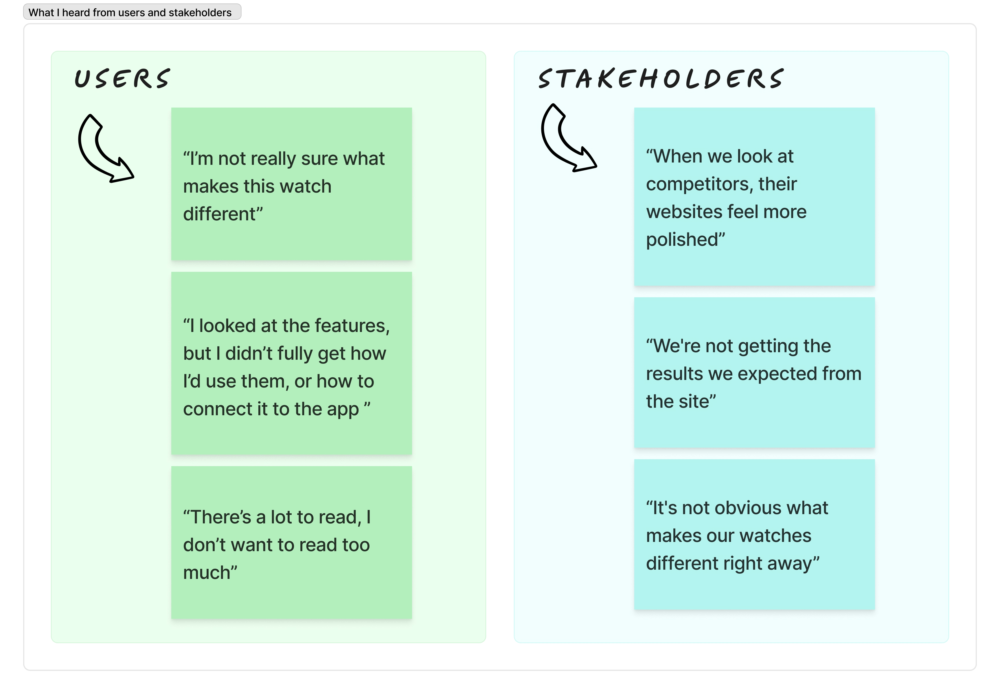
Clear navigation and CTAs help users explore the products and reach the product page.
Usability review of the existing website
Based on interviews and a usability review of the existing website, several issues were identified.
The examples below highlight the most relevant usability issues.
Before
The homepage used a two-level navigation that mixed watch collections with secondary content. This made navigation harder to understand and partially covered the main visuals.
After
Navigation was simplified to focus on watch collections first. Supporting content was grouped more clearly, improving clarity and keeping the main visuals fully visible.
Before
The homepage used a two-level navigation that mixed watch collections with secondary content. This made navigation harder to understand and partially covered the main visuals.
After
The redesigned homepage uses a more neutral color paletteand places greater emphasis on lifestyle imagery. Product features are presented more clearly, allowing the watch and its benefits to stand out.
Competitive benchmarking
To better understand best practices, I analyzed websites from direct and indirect competitors, as well as e-commerce brands outside the watch category. This helped compare Kronaby's UX against luxury, mid-range, and conversion-driven experiences.
The table below summarizes key UX patterns across different brands.
Feature/Platform |
Kronaby Goal |
Tag Heuer |
Daniel Wellington |
ASOS |
|---|---|---|---|---|
Information Architecture |
Simple and clear value proposition. |
Clear and detailed product organization. |
Minimal structure focused on style and easy shopping. |
Designed to sell fast advanced search and filters. |
Homepage Storytelling |
Subtle storytelling around smart features and Scandinavian design. |
Bold and energetic brand storytelling. |
Clean and modern look that fits everyday life. |
Trend-driven content and limited-time collections. |
Landing Page Experience |
Focused on the “connected, not distracted” philosophy. |
Highly visual pages designed for conversion. |
Focused on the product without distractions. |
Urgency-based UI optimized for sales. |
Product Page UX |
Lifestyle imagery, feature clarity, and clear CTAs. |
Interactive visuals, 360° views, and detailed specs. |
Minimal, fashion-led product presentation. |
Scannable content with reviews and user images. |
Navigation & Menu |
Simple navigation with fast access to key sections. |
Clear filters and detailed product options. |
Fast and frictionless navigation. |
Quick-access menus to help users find what they need. |
These patterns later informed navigation structure, content hierarchy, and visual emphasis decisions.
4. Insights and UX Decisions
Based on research findings and usability observations, I grouped the main issues into clear insights and translated them into practical UX decisions.
Insight 3 — Low website visibility limited brand awareness
Finding
The website had low organic visibility and lacked content designed for first-time discovery.Benchmarking showed that SEO-friendly content and clear storytelling help users discover and understand the brand.
Impact
Low awareness resulted in fewer direct visits.
Decision
I collaborated with an SEO expert to restructure content around user intent, improving information hierarchy, headings, and introducing educational guides that support both discovery and early brand understanding.
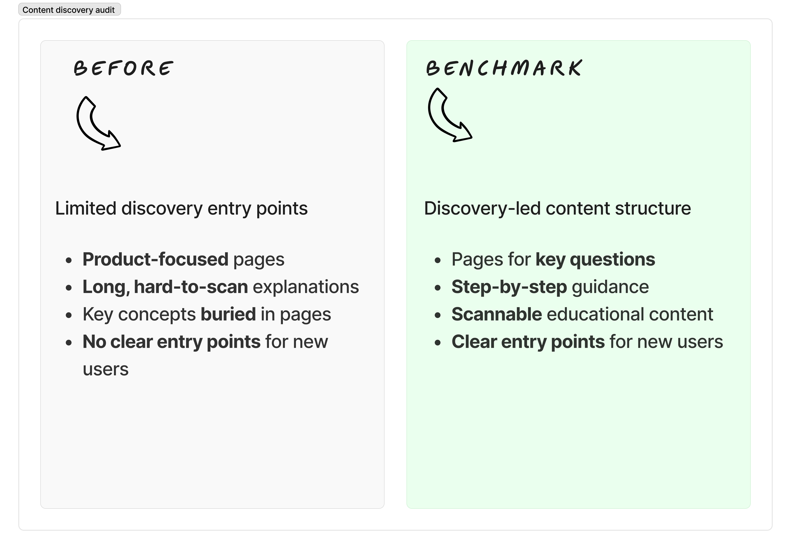
Evidence from benchmarking
Some educational content existed, but explanations were long, unstructured, and placed deep within the page, making the hybrid watch concept hard to grasp quickly.
Insight 2 — Users didn't understand what a hybrid watch is
Finding
Users struggled to understand what a hybrid watch is and how it fits into their daily life. Although the previous website included explanatory content, it required effort to find and digest, making the product concept easy to miss.
Impact
An unclear value proposition reduced engagement and confidence in the product.
Decision
I introduced a storytelling-based approach through dedicated educational touchpoints, using concise text and visuals to explain the concept before presenting detailed features.
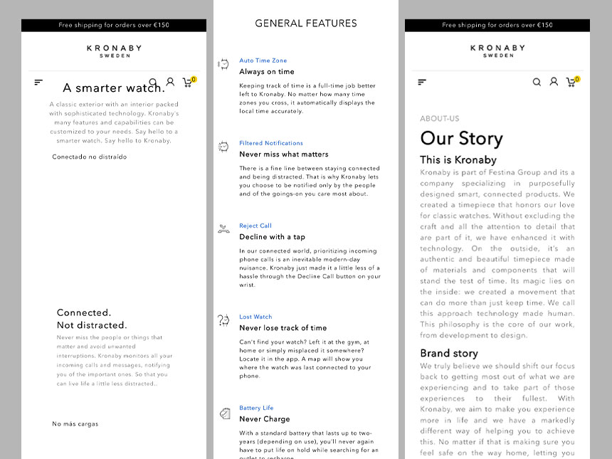
Evidence from previous website
Educational content existed, but explanations were long, unstructured, and placed deep within the page, making the hybrid watch concept hard to grasp quickly.
Insight 1 — Navigation confusion led to early drop-off
Finding
Users were exposed to multiple navigation entry points at the same time, with different labels leading to the same destination. Navigation visibility and hierarchy changed depending on background imagery and menu state, making key options hard to scan and creating false choices. As a result, it was often unclear where to start.
Impact
Navigation created hesitation instead of guidance, causing users to lose context and leave before exploring products.
Decision
I simplified the navigation to create one clear main path. Product collections were placed first, while secondary and educational content was moved out of the main flow to help users find products faster and explore more easily.
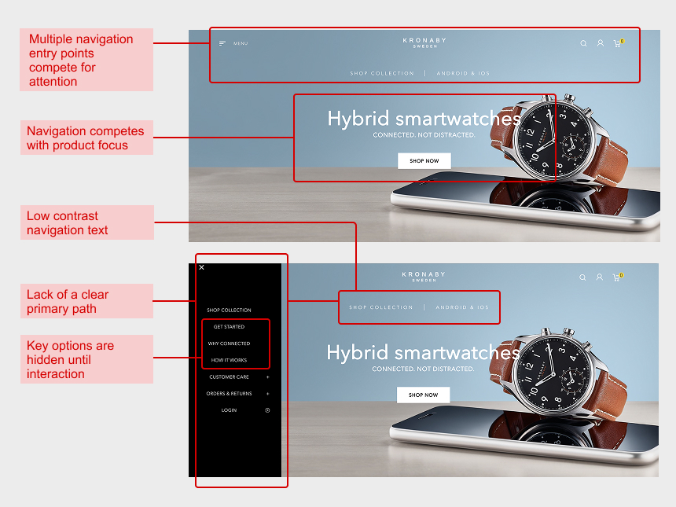
Evidence from usability review
Navigation relied on multiple entry points, changing hierarchy and visibility depending on background and menu state, which made orientation and decision-making harder for users.
Together, these insights showed that users struggled to discover the brand, understand the product, and navigate the site. Solving these issues helped create a clearer, more confident user journey.
5. Visual design
The visual design focused on clarity, consistency, and usability. Typography and color were used to improve scanning, and better reflect the brand.
Typography
Insight addressed
Users found it hard to scan content and quickly understand what was important.
The style guide defined Avenir Next and Minion, but the website used many different fonts, including Avenir Next, Lucida Grande, Iconochive, and sometimes Roboto. This lack of consistency created visual noise.
Decision
I selected DM Sans as the main typeface. It has a clean, modern look and is optimized for digital use. Using a single font improved readability, consistency, and loading speed.
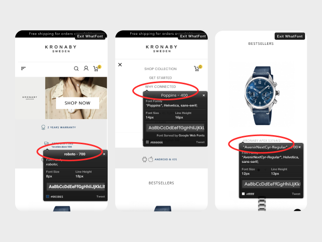

Comparison between the original website's inconsistent typography (left) and the refined direction using DM Sans (right), showing improved hierarchy and readability.
Color palette
Insight addressed
Users had trouble understanding visual hierarchy and knowing where to focus.
Decision
The color system is based on purpose, not decoration: Cool mint tones create structure and clarity, warm brown tones highlight important actions, and vivid colors are reserved exclusively for moments that require emphasis.
- Mint Cool: layout, text, icons, and UI elements
- Brown: main actions and purchase moments.
- Vivid accents: feedback and emotional states
- Vivid accents: main background
Variations in lightness and saturation to create depth and guide the eye.
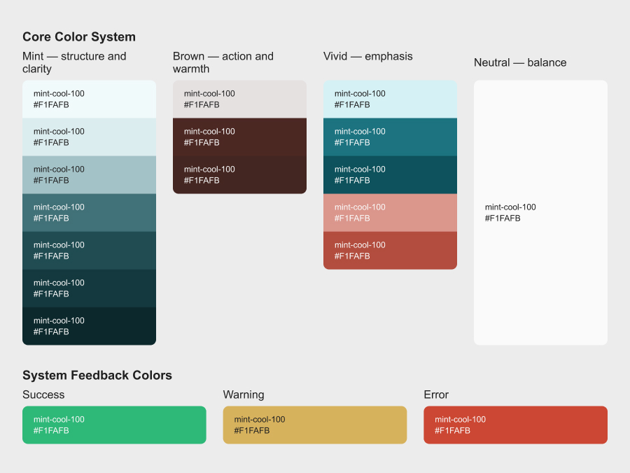
Clear navigation and CTAs help users explore the products and reach the product page.
Application of color
Insight addressed
Users had trouble understanding visual hierarchy and knowing where to focus.
Decision
Color is used to reinforce hierarchy and interaction, not to compete with content..
In practice:
- Product grids remain neutral, allowing imagery to lead.
- Calls to action are immediately recognizable through warm contrast.
- Micro-interactions (likes, filters, states) rely on restrained vivid accents to provide clear feedback.
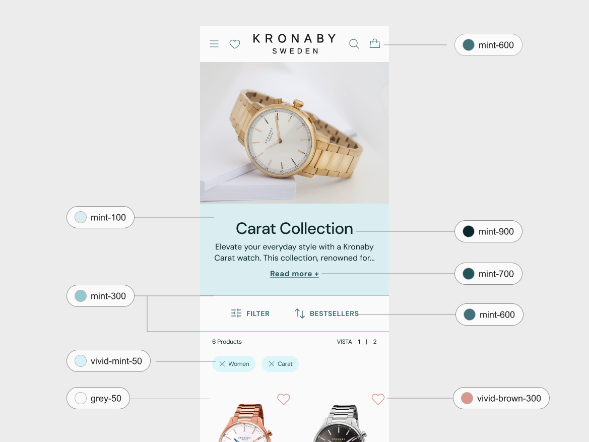
Clear navigation and CTAs help users explore the products and reach the product page.
6. The features: Explaining the product through design
To make hybrid watch features easier to understand, I designed a dedicated Icon Card component. It turns complex information into clear, visual explanations that support the overall storytelling of the site.
Insight addressed
Users didn't clearly understand what a hybrid watch is or how it fits into their daily life. Previous feature explanations were long, text-heavy, and not designed for quick reading or learning.
Design decision
I created a simple, visual Icon Card to explain features in a clear and scannable way.
The component:
- Highlights only the most important information
- Uses clear, user-friendly language
- Replaces long text with visual cues
- Can be reused across Kronaby and other Festina brands
Outcome
The Icon Card helps users understand features faster and see how a hybrid watch fits naturally into everyday life.
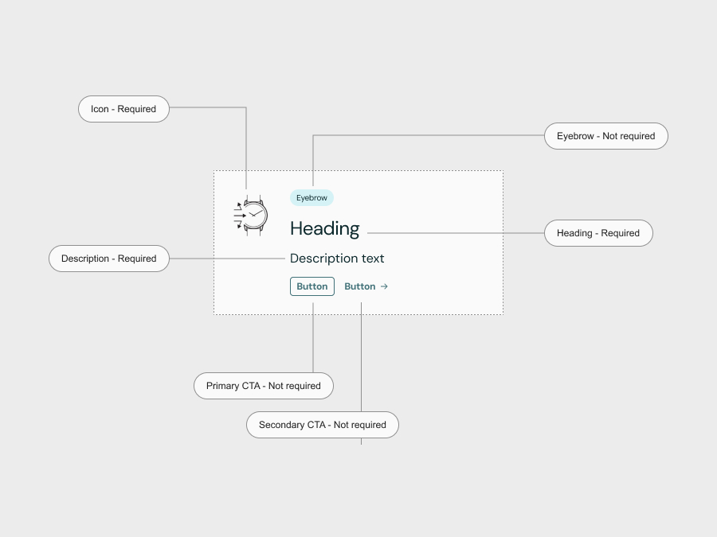
Clear navigation and CTAs help users explore the products and reach the product page.
Before
Text-heavy feature presentation on the product page
Before
Visual Icon Cards make feature information easier to read and scan.
8. Final Results 🫶
The final design brings together clarity, progressive storytelling, and a simplified navigation system, creating a calmer and more confident experience across the site.
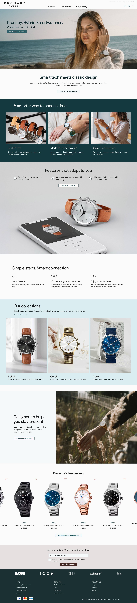
Homepage
Clear brand positioning and first-touch orientation through a calm, focused hero.
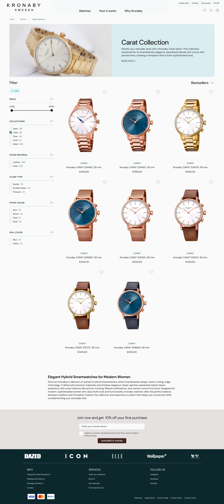
Homepage
Clear brand positioning and first-touch orientation through a calm, focused hero.
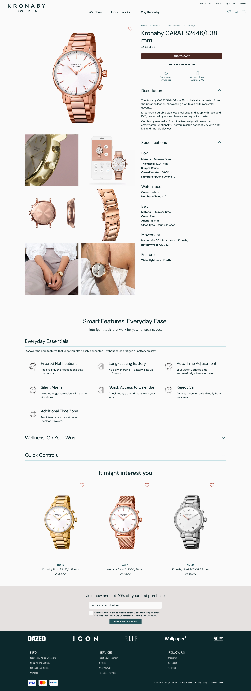
Homepage
Clear brand positioning and first-touch orientation through a calm, focused hero.
Progressive storytelling to explain the hybrid watch concept
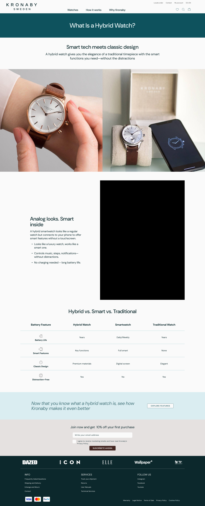
What is a Hybrid Watch? — Introducing the concept
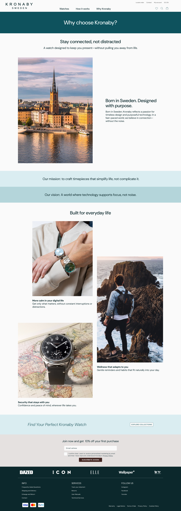
Why choose Kronaby? — Brand values and differentiation
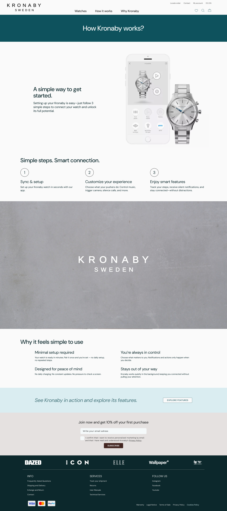
How Kronaby works — From concept to features
The storytelling pages were designed as a progressive journey, guiding users from understanding the concept to exploring concrete product features.
9. What about metrics?
I wrapped up this project in my last week at Festina Group, so I didn't get the chance to track final results. If I had stayed longer, I would have focused on metrics like time on site, bounce rate, direct traffic, and checkout starts. Even without final data, these metrics helped guide my design decisions.
10. Next steps for Kronaby
Honestly, the big thing would be tracking user behavior and refine the site. More engaging content would boost SEO and explain the product. Building a community with reviews and forums would be great. And of course, tying it all in better with the rest of Festina's world, especially that checkout redesign, would make the whole experience smoother.
11. Key takeaways & learnings
- Qualitative research can provide strong insights, even without analytics
- Tight timelines require flexibility and smart prioritization
- Focusing on high-impact changes is more effective than fixing everything